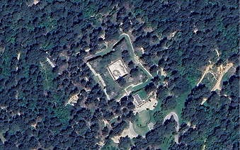
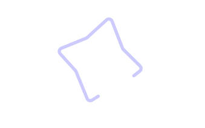
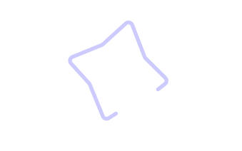
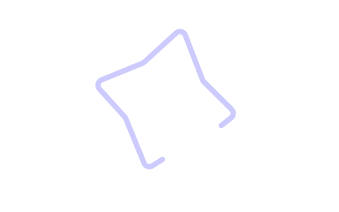

Contrôler sans être vu
Glacis et chemins couverts
3/7
Les glacis rendent l'approche ennemie dangereuse en supprimant les angles morts. De leur côté, les chemins couverts offrent aux soldats un passage protégé, ce qui leur permettait de surveiller le terrain.

 



Depuis un chemin couvert, un soldat pouvait tirer sans jamais montrer sa tête.
Rendez-vous au prochain point pour en savoir plus !